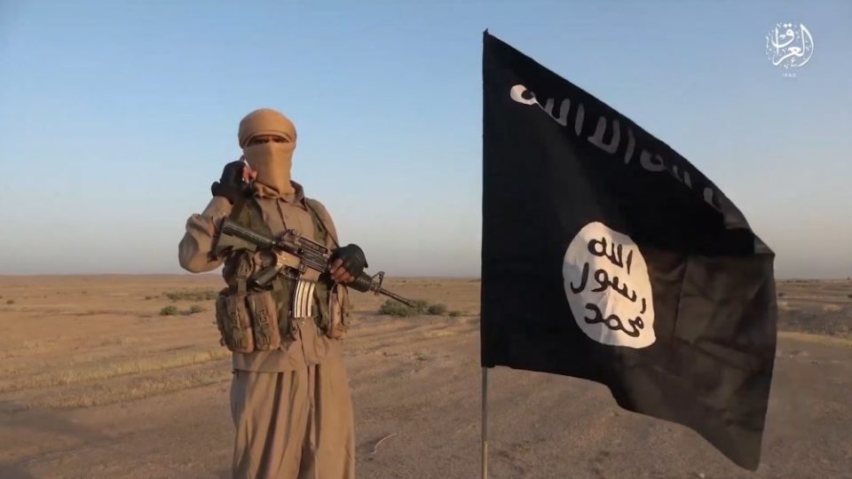
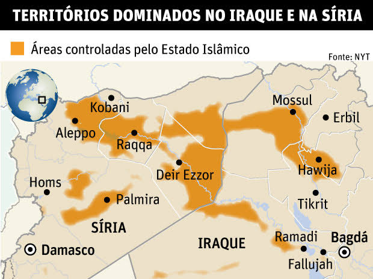

Estado Islâmico

O que é?
O Estado Islâmico do Iraque e Levante (EI) é um califado com atuação terrorista que controla regiões no Iraque e na Síria e[k] baseia sua ideologia em interpretações radicais de determinados princípios do Islamismo. Esse califado – um Estado que é governado por uma autoridade religiosa, o califa – foi criado em 29 de junho de 2014 e ESPALHA O TERROR SOBRE A POPULAçãO DAS REGIõES QUE CONTROLA, perseguindo minorias e organizando ataques terroristas em outras partes do mundo, como os ataques recentemente ocorridos na França.
Como/onde surgiu?
O surgimento do Estado Islâmico está diretamente relacionado com a instabilidade gerada pela guerra no Iraque após a invasão norte-americana em 2003. Esse cenário permitiu que grupos jihadistas fossem instalados e desenvolvidos livremente nesse país. Entre esses grupos está a Al-Qaeda, que se instalou no Iraque em 2004 e foi liderada pelo jordaniano Abu Musab Al-Zarqawi (morto em 2006).
Com o início da guerra civil iraquiana em 2006, o grupo rompeu com a Al-Qaeda e concentrou suas atenções no Iraque. A partir da Primavera árabe e da onda de protestos espalhados pelas nações árabes, o Estado Islâmico viu a oportunidade de instalar-se na Síria e, com o início da guerra civil síria, o grupo passou a atuar tanto nesse país quanto no Iraque.
Ideologia
Atualmente liderado pelo autodeclarado califa Abu Bakr al-Baghdadi, o Estado Islâmico, se denominando como um grupo sunita, impõe a sharia, a lei islâmica, nos territórios dominados e persegue minorias religiosas, além de lutar contra outros grupos islâmicos. A origem ideológica desse grupo é baseada no wahabismo, doutrina de Al-Wahhab que defendia uma interpretação literal do Corão e de outros escritos sagrados do Islamismo.
O wahabismo também é a ideologia oficial da Arábia Saudita, nação árabe mais rica e poderosa atualmente. Desde que a Arábia colocou-se como uma influente nação, passou a exportar sua ideologia e a inspirar inúmeros grupos fundamentalistas islâmicos[l] que também defendem a interpretação literal dos textos religiosos e a imposição da sharia. Na Europa, essa ideologia encontra espaço nas comunidades islâmicas que, em geral, sofrem com bastante preconceito e dificuldade de integração.[m]
Como/onde atua?
A violência do Estado Islâmico (EI) é utilizada para impor o medo e, por conseguinte, o respeito nas regiões que controlam. Com o rígido controle da sharia, o grupo impõe punições pesadas a todos aqueles que não seguem o Corão, além de perseguir e matar cruelmente qualquer tipo de minoria, como cristãos, curdos, yazidis, homossexuais etc.
Desde a criação do califado em 2014, várias execuções nas regiões dominadas e atentados terroristas em algumas partes do mundo foram realizados pelo Estado Islâmico (muitas dessas ações foram noticiadas pela mídia). Entre os objetivos do grupo, estão a dominação global e a imposição da sharia. Atualmente o EI domina importantes cidades iraquianas e sírias e possui bases estratégicas em outros locais, como na Líbia e no Iêmen.
Seus seguidores conseguem manter SUA JIHAD, ou guerra santa, com a venda de barris de petróleo, tráfico de mercadorias e doações de simpatizantes de várias partes do mundo. Em estimativas recentes, o Estado Islâmico figurou com cerca de 2 bilhões de dólares em recursos e um número de membros próximos a 50 mil.

Imagens utilizadas: https://ichef.bbci.co.uk/news/640/cpsprodpb/CC86/production/_116185325_isisceuafp.jpg http://f.i.uol.com.br/folha/mundo/images/15318290.jpeg
{kind=link}
{kind=link}
Veja mais sobre "O que é Estado Islâmico?" em: https://brasilescola.uol.com.br/o-que-e/historia/o-que-e-estado-islamico.htm
Outros fatos sobre o Estado Islâmico: https://www.historiadomundo.com.br/idade-contemporanea/estado-islamicogrupo-terrorista.htm